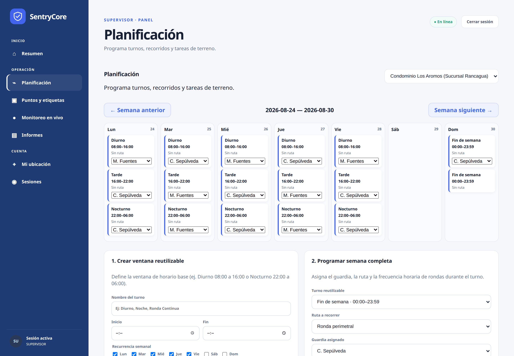
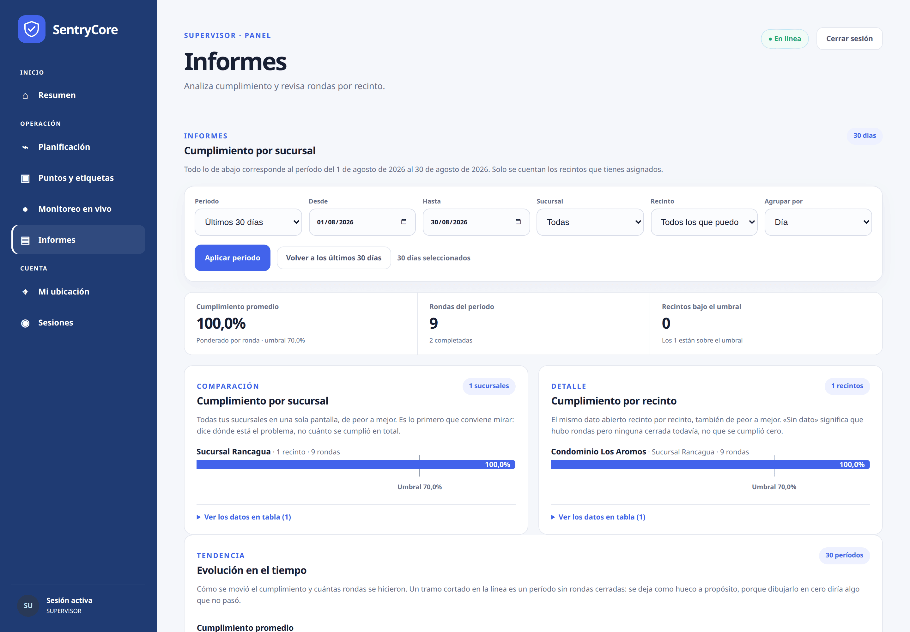
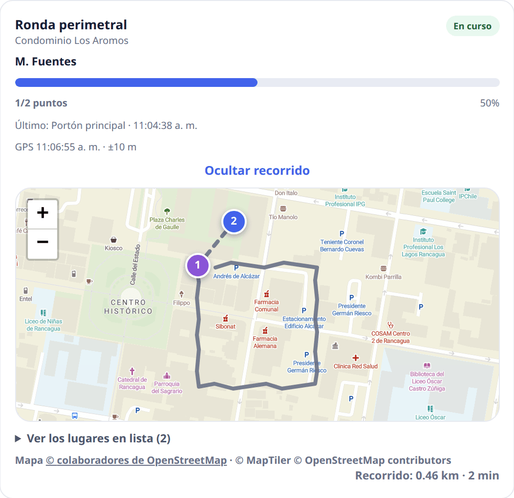
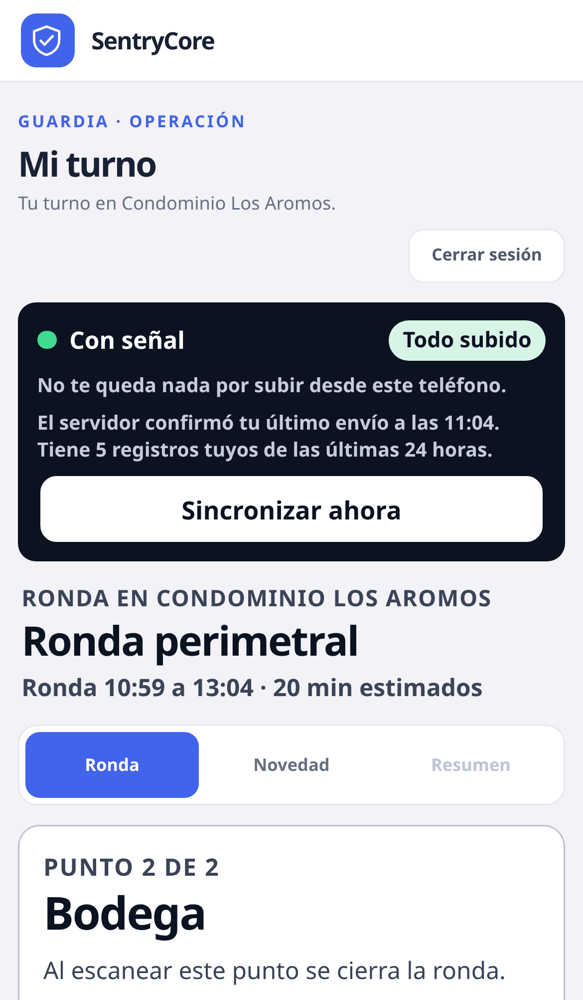

Geolocalización de guardias y Ley 21.719
Qué puedes registrar y qué no desde el 01-12-2026: consentimiento, finalidad, proporcionalidad, plazos y multas de hasta 20.000 UTM. Incluye el criterio de la Dirección del Trabajo sobre el GPS en la jornada.
Para empresas de seguridad privada: el guardia acerca el teléfono a la etiqueta de cada punto. El recorrido queda registrado durante todo el turno. El informe sale solo, con el mapa de lo que pasó esa noche.
El trabajo no cambia. Cambia lo que queda registrado de ese trabajo.
El guardia anota la ronda en un cuaderno. El supervisor llama por radio para confirmar que pasó por el portón. Cuando el cliente pregunta si se hizo la ronda de las tres de la mañana, alguien revisa hojas y contesta de memoria.
Cada punto queda marcado con hora y posición al acercar el teléfono. El supervisor ve el avance en el mapa mientras ocurre. El informe de esa noche se manda tal como salió, sin que nadie lo arme.
Una etiqueta NFC pegada en cada lugar del recorrido. El guardia acerca el teléfono y queda registrado con hora y posición. Si la etiqueta falla, hay código QR de respaldo.
Una posición por minuto mientras dura la ronda, aunque el teléfono esté guardado en el bolsillo. Fuera del turno no se registra nada: el servidor rechaza esas posiciones.
Con el recorrido sobre el mapa real, los puntos marcados, los omitidos y las anomalías. Listo para enviar a tu cliente sin que nadie lo arme.
Capturas del panel funcionando y de la aplicación en el teléfono del guardia.

Dónde está cada guardia ahora, con la hora de la última posición y su precisión en metros. Se refresca solo, cada cinco segundos.

Ventanas de turno reutilizables y la semana completa asignada de una pasada. Si dos turnos se pisan, el sistema lo dice antes de guardar.

De peor a mejor, por sucursal y por recinto, contra el umbral que fijaste. Es lo que le mandas al cliente a fin de mes.

Avance, hora del último escaneo y el recorrido real sobre el plano. Sin esperar a que termine el turno.

Qué punto toca ahora y si quedó algo por subir. Nada más: el turno no es momento de explorar menús.
Capturas tomadas del sistema en funcionamiento. Los nombres de empresa, recinto y guardias son de demostración.
El sistema es tuyo por dentro y por fuera: el cliente ve tu marca, y la operación se ajusta a cómo trabajas tú, no al revés.
Cada empresa configura su nombre comercial, su logo y sus colores. Eso se estampa en el panel, en los informes que recibe tu cliente y en los correos que salen del sistema, con el remitente y el pie que tú definas.
| Qué configuras | Dónde aparece |
|---|---|
| Nombre comercial y logo | Panel, informes y correos |
| Color principal y secundario | Toda la interfaz y los informes |
| Nombre del remitente y pie de correo | Los correos que salen a tus clientes |
Con un límite que no negociamos: el sistema no deja guardar un color de marca que no alcance el contraste mínimo de lectura. Un informe que tu cliente no puede leer en el teléfono no sirve de nada, por lindo que se vea el color.
La configuración baja en cascada: lo que fijas para la empresa vale en todos tus recintos, y cada recinto —o incluso un punto de control puntual— puede tener su propia excepción. Gana siempre el nivel más específico, y el panel te dice de qué nivel salió cada valor.
| Se ajusta por empresa o por recinto | Rango |
|---|---|
| Umbral de cumplimiento del recinto | 0–100 % |
| Cada cuánto se registra la posición durante la ronda | 1 s – 15 min |
| Cuánto se conserva el recorrido antes de eliminarlo | 7–365 días |
| Radio de validación del escaneo respecto del punto | 5–1.000 m |
| Duración máxima de una ronda | 5 min – 24 h |
| Foto obligatoria en accesos críticos o fuera de horario | Sí o no |
| Orden del recorrido fijo o aleatorio | Sí o no |
| Código QR como respaldo de la etiqueta NFC | Sí o no |
| Envío automático del informe al cerrar la ronda | Hasta 10 destinatarios |
| Contenido del informe: mapa, línea de tiempo, fotos | Sí o no, por separado |
| Registro de recorrido por GPS | Se puede apagar del todo |
Si un cliente tuyo no quiere geolocalización, se apaga para ese recinto y las rondas siguen acreditándose con las etiquetas. La decisión es de cada operación, no del software.
Desde el 01-12-2026 la geolocalización de un trabajador es un dato personal con todas las de la ley. Registrar por dónde anduvo tu guardia deja de ser una decisión técnica y pasa a tener reglas: base legal, finalidad, plazo y derechos. SentryCore ya trae eso resuelto en el producto.
Cuidado con lo que esto significa: quien responde ante la Agencia de Protección de Datos es tu empresa, no el software. Lo que sigue es lo que el sistema hace por ti, no un certificado de cumplimiento.
| Lo que exige la ley | Lo que ya hace SentryCore |
|---|---|
| Consentimiento libre e informado | El guardia lee qué se registra y decide antes de empezar el turno. Puede negarse y sigue trabajando igual. Su respuesta queda con fecha y hora. |
| Finalidad determinada | La ubicación se usa para acreditar la ronda. Nada más, y así se lo dice el aviso al trabajador. |
| Proporcionalidad del tratamiento | Solo se registra mientras la ronda está en curso. Fuera del turno el servidor rechaza las posiciones: no queda un rastro de la vida privada de nadie. |
| Plazo acotado de conservación | El recorrido se elimina a los 90 días, sin que nadie tenga que acordarse de borrarlo. |
| Retiro del consentimiento | El guardia lo revoca desde su teléfono y el registro se detiene de inmediato. |
| Separación entre empresas | Los datos de un cliente no son alcanzables desde otro, y eso está impuesto en la base de datos. |
Ley 21.719, publicada el 13-12-2024 y vigente desde el 01-12-2026. Las infracciones graves —tratar datos sin base legal, impedir el ejercicio de derechos— llegan a 10.000 UTM. Se suma a la Ley 21.659 de Seguridad Privada y su reglamento del 27-05-2025.
Decisiones que no se ven en una demostración pero deciden si el sistema sirve en terreno.
Si no hay cobertura, el escaneo se guarda en el teléfono y sube cuando vuelve la señal. El guardia ve qué le falta subir.
Los datos de una empresa no son alcanzables desde otra, y eso está impuesto en la base de datos, no solo en la aplicación.
Un patrón semanal por empleado que se expande solo. Las decisiones manuales siempre le ganan al patrón.
El guardia entra acercando su tarjeta NFC. El código de la empresa queda guardado en el teléfono.
No es una promesa de la aplicación: el servidor rechaza cualquier posición que llegue fuera de la ventana del turno.
El avance en el mapa, los puntos que se van marcando y aviso de los que quedaron sin hacer.
| Medición en terreno | Valor |
|---|---|
| Precisión del recorrido | 13 m |
| Frecuencia de registro | 60 s |
| Retención del recorrido | 90 días |
| Salto máximo entre posiciones | 2 m |
Lo que hay que saber antes de decidir, escrito con las fuentes a la vista.
Qué puedes registrar y qué no desde el 01-12-2026: consentimiento, finalidad, proporcionalidad, plazos y multas de hasta 20.000 UTM. Incluye el criterio de la Dirección del Trabajo sobre el GPS en la jornada.
Qué cambió para las empresas de seguridad privada, quién fiscaliza ahora y qué atributos tiene un registro de rondas que sirve de evidencia.
Cómo funciona, qué equipos hacen falta, en qué se diferencia del QR y del libro de novedades, y cuáles son los huecos que hay que cerrar.
Qué es SentryCore, cómo acredita la ronda, si funciona sin señal, qué pasa si el guardia no acepta el GPS y cómo se contrata.
Lo que preguntan las empresas de seguridad privada antes de cambiar el libro de novedades por un sistema.
SentryCore es un software chileno de gestión de rondas de guardias. El guardia marca cada punto de control acercando su teléfono a una etiqueta NFC —o leyendo un código QR—, el recorrido queda registrado con GPS durante el turno y el sistema genera solo el informe de cumplimiento con el mapa de lo que ocurrió.
Cada punto de control tiene una etiqueta NFC pegada en el lugar. Marcarla exige estar ahí físicamente, y el escaneo viaja firmado por el teléfono. A eso se suma el recorrido GPS, con una posición por minuto durante toda la ronda. El informe muestra los puntos marcados, los omitidos y el trazado sobre cartografía real.
Un teléfono Android con NFC por guardia y etiquetas NFC estándar en cada punto de control. No hay lectores propietarios ni servidores en el recinto: la app se instala en el teléfono y el panel del supervisor funciona en cualquier navegador.
Sí. La app guarda los escaneos y las posiciones en el teléfono y los sube apenas vuelve la señal. El guardia ve en su pantalla si le queda algo por subir, y el supervisor ve la hora real en que ocurrió cada marca, no la hora en que llegó al servidor.
Sí, con reglas. Desde el 1 de diciembre de 2026 rige la Ley 21.719 y la geolocalización de un trabajador es un dato personal: exige consentimiento informado, finalidad determinada, proporcionalidad y un plazo de conservación. SentryCore pide el consentimiento antes del turno, solo registra mientras la ronda está en curso y elimina el recorrido a los 90 días. La responsable ante la Agencia de Protección de Datos sigue siendo tu empresa.
Sigue trabajando igual. Puede rechazar el aviso de geolocalización, y también revocarlo después desde su teléfono: el registro se detiene de inmediato. Su decisión queda guardada con fecha y hora, que es justamente lo que la ley pide poder demostrar.
SentryCore deja registro verificable de las rondas, los turnos y las novedades de cada recinto, que es la evidencia que una empresa de seguridad privada necesita tener a mano. El cumplimiento del reglamento del 27 de mayo de 2025 depende de tu operación completa; el sistema aporta el registro, no el certificado.
En el panel del supervisor: monitoreo en vivo mientras la ronda ocurre, y después el informe de cumplimiento por recinto y por sucursal, con el recorrido dibujado sobre el mapa, los puntos marcados y los omitidos. Es lo que se le manda al cliente a fin de mes.
Desde los botones de contacto del sitio, por WhatsApp o por correo. La demostración se hace con un recinto tuyo cargado —tus puntos, tu recorrido— para que veas el informe con datos reales y no con un ejemplo.
Sí. Cada empresa configura su nombre comercial, su logo y sus colores, y eso se aplica al panel, a los informes que recibe el cliente y a los correos que salen del sistema, incluidos el remitente y el pie. Tu cliente ve tu marca, no la nuestra. La única restricción es de contraste: el sistema no acepta un color de marca que deje el texto ilegible.
Sí. La configuración baja en cascada por cuatro niveles —plataforma, empresa, recinto y punto de control— y gana siempre el más específico. Puedes fijar un umbral de cumplimiento para toda la empresa y bajarlo en un recinto puntual, exigir foto solo en los accesos críticos de un cliente, o apagar la geolocalización en el recinto de quien no la quiera. El panel muestra de qué nivel salió cada valor.
El umbral de cumplimiento, cada cuánto se registra la posición durante la ronda, cuántos días se conserva el recorrido, el radio de validación del escaneo, la duración máxima de una ronda, si el orden del recorrido es fijo o aleatorio, si se exige foto en los puntos críticos, si el QR sirve de respaldo del NFC, quiénes reciben el informe al cerrar la ronda y qué trae ese informe. Todo desde el panel del administrador.
Te mostramos el sistema con un recinto tuyo cargado, para que veas el informe con tus puntos y tu recorrido, no con datos de ejemplo.
Respondemos en horario hábil.
Actualizado el 30 de agosto de 2026